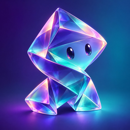

Glaze questions and answers
Glaze: Icon Themes & Widgets
How do I make an aesthetic iPhone Home Screen?
Pick a theme in Glaze and tap Use this theme. Your Glaze widgets switch to its art straight away, then Glaze lists the next steps: save the wallpaper, add the matching icons and add the widgets.
How much does Glaze cost?
Glaze is a free download with 10 premium themes free to keep. Glaze Plus unlocks every theme for A$2.99 a year in Australia (the App Store shows your local price). No ads and no weekly plan.
Is there a free trial?
No. The 10 free premium themes are yours to try and keep instead.
What comes with each theme?
A wallpaper, an icon style and five artworks for your widgets.
How do the matching icons work?
Glaze makes Home Screen shortcuts in the theme's colours and symbols that open your apps. Add them all at once with one install in Settings, or one at a time with Apple's Shortcuts app. Your original apps are not changed, and Glaze shows how to undo it.
What widgets does Glaze have?
Small Home Screen widgets: Artwork 1 to 5 show pieces from your theme and change when you change theme, and Custom 1 to 5 show your own pictures.
Can I use my own photos?
Yes. Put your own pictures in Custom 1 to 5, and turn a short clip of your own into a Live Photo with the Live Photo maker.
How many themes are there?
Over 250 original themes: starry nights, nature, ocean, cute and cosy, sweets, dreamy pastels, moody darks, art, seasons and city retro.
Does Glaze have ads or need an account?
No ads, no account and no tracking. Your photos and videos never leave your iPhone.
What happens if I stop Glaze Plus?
You keep the 10 free themes, your own icons, Custom 1 to 5 and the Live Photo maker, and a theme you already applied keeps working.
Is Glaze on Android?
Not at the moment. Glaze is on iPhone only, from the App Store.